Meus Trabalhos
IguaisProLixo
Pacote com diversos programas de análise de similaridade em fotografias
Verifica por comparação se fotografias são iguais e exclui as duplicidades. Possui controle de similaridade pelas imagens das fotos, compara tamanho em bytes, nomes, localização relativa, etc.
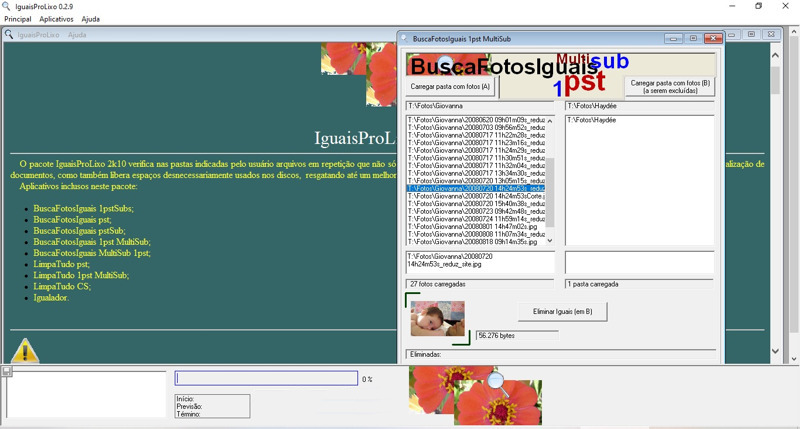
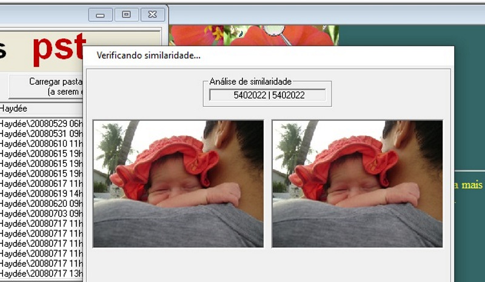
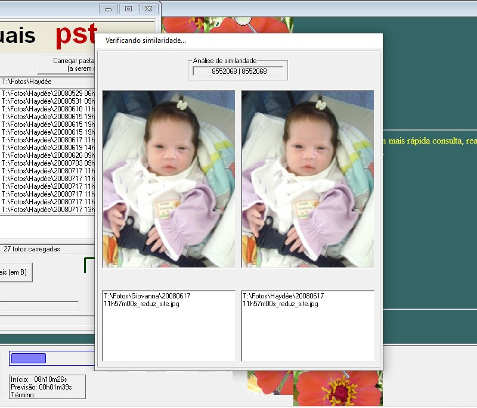
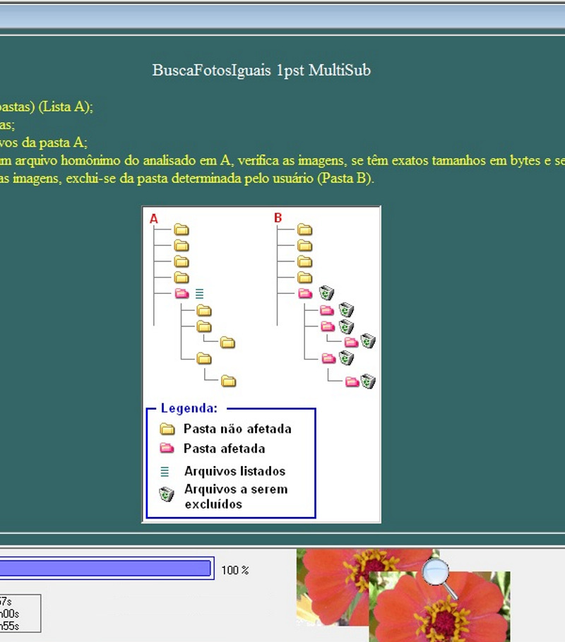
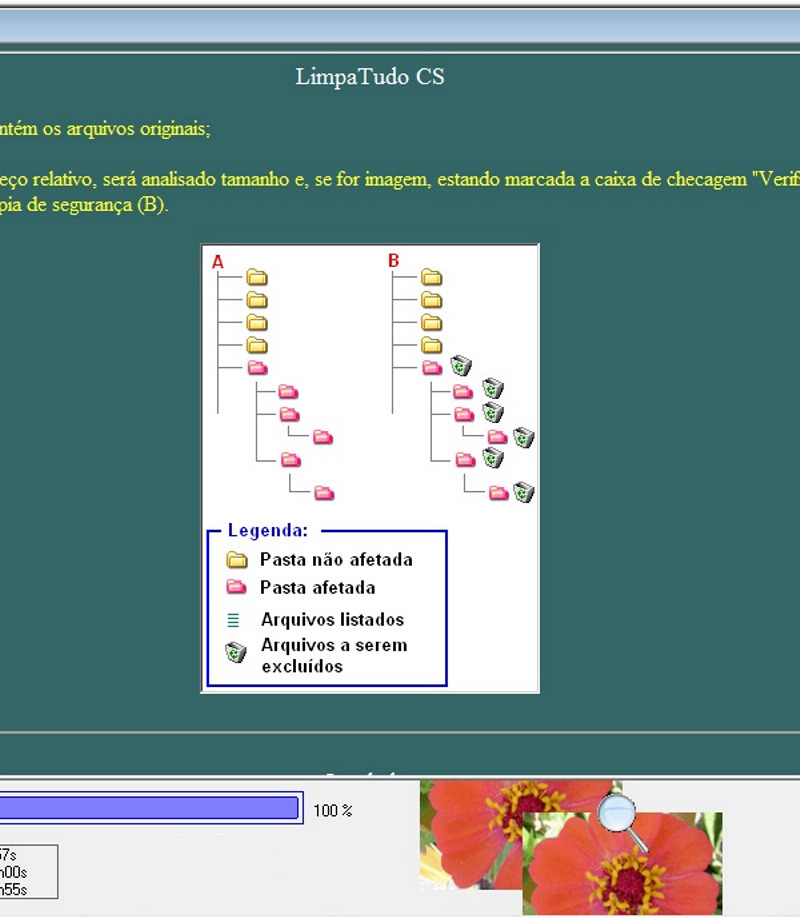
Descrição dos programas do pacote
BuscaFotosIguais 1pstSubs
Carrega todas imagens de uma pasta e suas pastas;
Os arquivos a serem analisados poderão estar todos numa única pasta ou em sub-pastas de uma única pasta;
Verifica individualmente as imagens, buscando outras com exato tamanho em bytes;
Se encontrar com exato tamanho, independente de nome de arquivo, verifica se são similares;
Confirmando-se pelos critérios acima a similaridade das imagens, exclui-se uma delas de forma aleatória, ou seja, o usuário não poderá escolher de qual das pastas haverá a exclusão.
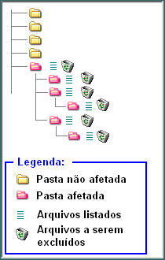
BuscaFotosIguais 1pstSubs
BuscaFotosIguais pst
Os arquivos que não serão excluídos deverão ser carregados na Lista A (não verifica sub-pastas) e os que serão excluídos deverão ser carregados na Lista B (também não setão verificadas sub-pastas);
Analisa todos arquivos da Pasta A, verificando na Pasta B se existe arquivos homônimos;
Se achado na Pasta B um arquivo homônimo do analisado em A, verifica as imagens, se têm exatos tamanhos em bytes e se são similares;
Confirmando-se pelos critérios acima a similaridade das imagens, exclui-se da pasta determinada pelo usuário (Pasta B).
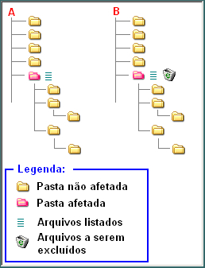
BuscaFotosIguais pst
BuscaFotosIguais pstSub
Carrega todas imagens de uma pasta e suas sub-pastas na Lista A;
Carrega-se a Lista B com a pasta e sub-pastas cujas imagens serão passíveis de exclusão;
Analisa todos arquivos da Lista A, verificando nas pastas da Lista B se existem arquivos homônimos;
Se achado nas pastas da Lista B um arquivo homônimo do analisado em A, verifica as imagens, se têm exatos tamanhos em bytes e se são similares;
Confirmando-se pelos critérios acima a similaridade das imagens, exclui-se da pasta determinada pelo usuário (Pasta B).
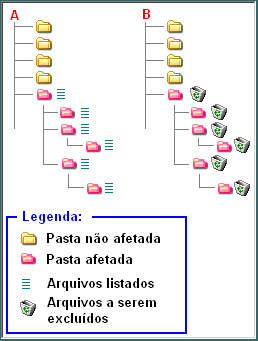
BuscaFotosIguais pstSub
BuscaFotosIguais 1pst MultiSub
Carrega todas imagens de uma pasta (sem suas sub-pastas) (Lista A);
Carrega na lista B a pasta indicada com suas sub-pastas;
Busca-se nas pastas B arquivos homônimos dos arquivos da pasta A;
Se achado na Pasta B ou alguma de suas sub-pastas um arquivo homônimo do analisado em A, verifica as imagens, se têm exatos tamanhos em bytes e se são similares;
Confirmando-se pelos critérios acima a similaridade das imagens, exclui-se da pasta determinada pelo usuário (Pasta B).
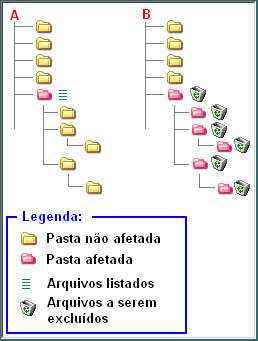
BuscaFotosIguais 1pst MultiSub
BuscaFotosIguais MultiSub 1pst
Carrega na lista A todas pastas e respectivas sub-pastas;
Carrega todas imagens de uma pasta (sem suas sub-pastas) (Lista B);
Busca-se nas pastas A arquivos homônimos dos arquivos da pasta B;
Se achado na Pasta A ou alguma de suas sub-pastas um arquivo homônimo do analisado em B, verifica as imagens, se têm exatos tamanhos em bytes e se são similares;
Confirmando-se pelos critérios acima a similaridade das imagens, exclui-se da pasta determinada pelo usuário (Pasta B).
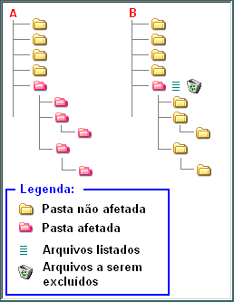
BuscaFotosIguais MultiSub 1pst
LimpaTudo pst
Os arquivos que não serão excluídos deverão ser carregados na Lista A (não verifica sub-pastas) e os que serão excluídos deverão ser carregados na Lista B (também não setão verificadas sub-pastas);
Analisa todos arquivos da Pasta A, verificando na Pasta B se existe arquivos homônimos;
Se achado na Pasta B um arquivo homônimo do analisado em A, verifica se têm exatos tamanhos em bytes;
Se o arquivo for imagem, estando marcada a caixa de checagem "Verificar similaridade em imagens", esta verificação será efetuada;
Confirmando-se pelos critérios acima, exclui-se da pasta determinada pelo usuário (Pasta B).
LimpaTudo pst
LimpaTudo 1pst MultiSub
Carrega todos arquivos de uma pasta (sem suas sub-pastas) (Lista A);
Carrega na lista B a pasta indicada com suas respectivas sub-pastas;
Busca-se nas pastas da lista B arquivos homônimos dos arquivos da Lista A;
Se achado na Pasta B ou alguma de suas sub-pastas um arquivo homônimo do analisado em A, verifica-se se têm exatos tamanhos em bytes;
Se forem imagens e a caixa de checagem "Verificar similaridade em imagens" estiver marcada, será realizada tal verificação;
Confirmando-se pelos critérios acima, exclui-se da pasta determinada pelo usuário (Pasta B).
LimpaTudo 1pst MultiSub
LimpaTudo CS
Carregue a pasta ou unidade de referência (A) que contém os arquivos originais;
Indique a unidade com as cópias de segurança (B);
Se em B existir um arquivo com mesmo nome e endereço relativo, será analisado tamanho e, se for imagem, estando marcada a caixa de checagem "Verificar similaridade em imagens", esta será efetuada;
Confirmando-se pelos critérios acima, exclui-se da cópia de segurança (B).
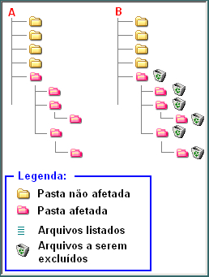
LimpaTudo CS
Igualador
Uma vez carregada a pasta ou unidade de origem (A) e indicada a pasta ou unidade de destino (B), o programa copiará para B todas pastas e arquivos que estiverem presentes em A e inexistentes em B;
Se em B já existir um arquivo com mesmo nome e endereço relativo, mesmo se for em outra versão ou tamanho, não será alterado ou excluído.
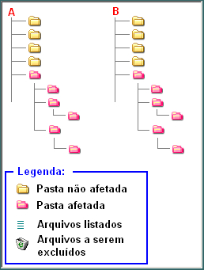
Igualador